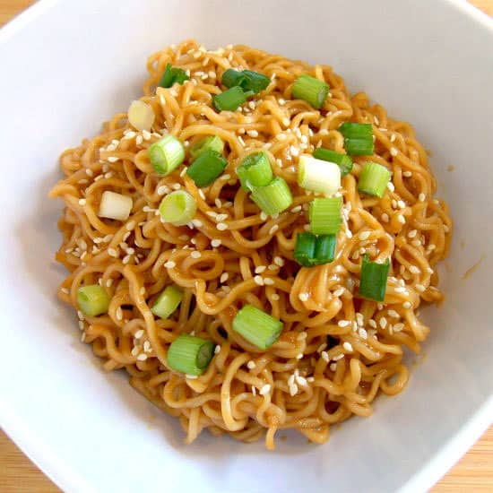

Sesame Noodle Sauce

Description
This is a delicious family recipe for sesame noodle sauce. Add it to whole wheat noodles with some veggies and a bit of chicken for a delicious meal. Creates great leftovers that can be enjoyed hot or cold!
Ingredients
- 1 tablespoon tahini
- 2 tablespoons creamy peanut butter
- 1 tablespoon honey mustard
- 1 tablesppoon chili oil
- 1/3 cup sesame oil
- 1/4 cup vegetable oil
- 3 tablespoons rice vinegar
- Juice of 1/2 orange
- 2 tablespoons tamari
Steps
- Place all of the ingredients in a blender.
- Turn on the blender to a reasonable speed.
- Are they blended? Stop the blender.
- Pour over your noodle or other dish of choice!
Return to main page